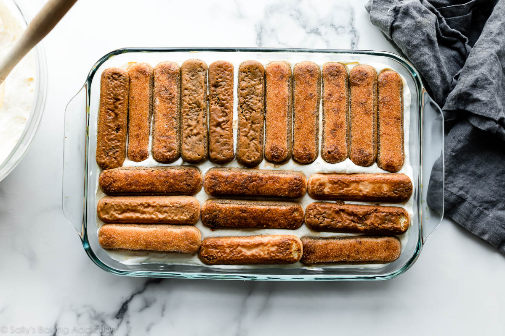

Tiramisu
Posted in June 13, 2019 / posted in No-bake Recipes
 |
 |  |
|
Tiramisu"is a timeless no-bake Italian dessert cominiong espresso-dipped ladyfingers and a cream lightly sweetened mascarpone cream. This recipe is from the late Maida Heatter and is easily the best homemade tiramisu recipe that i've ever tried A couple months ago, I was sent a new cookbook called Happiness is Baking. This cookbook includes Maida Heatter’s favorite recipes with the foreword written by Dorie Greenspan. I, unsurprisingly, immediately fell in love with my newest cookbook. It’s a collection of 100 foolproof and classic desserts including cookies, cakes, muffins, pies, tarts, and more that range from simple everyday cookies to outrageously indulgent chocolate soufflé cake. Ingredients
For those not familiar, Maida Heatter is an icon, especially in the baking world. Dubbed the Queen of Cake, her expansive culinary career included 9 cookbooks, recipes for the Times, a restaurant, and three James Beard Awards. Baker and author Dorie Greenspan once said “Whenever someone tells me they want to learn to bake, I tell them to start with Maida Heatter’s books. That’s what I did.” This latest cookbook is a testament to Maida’s legacy. She passed away only 2 months after this book was published. She leaves behind an incalculable amount of inspiration to bakers and cooks all over the world. 
Common Tiramisu Questions - Answered
If you want to order online Click Here |